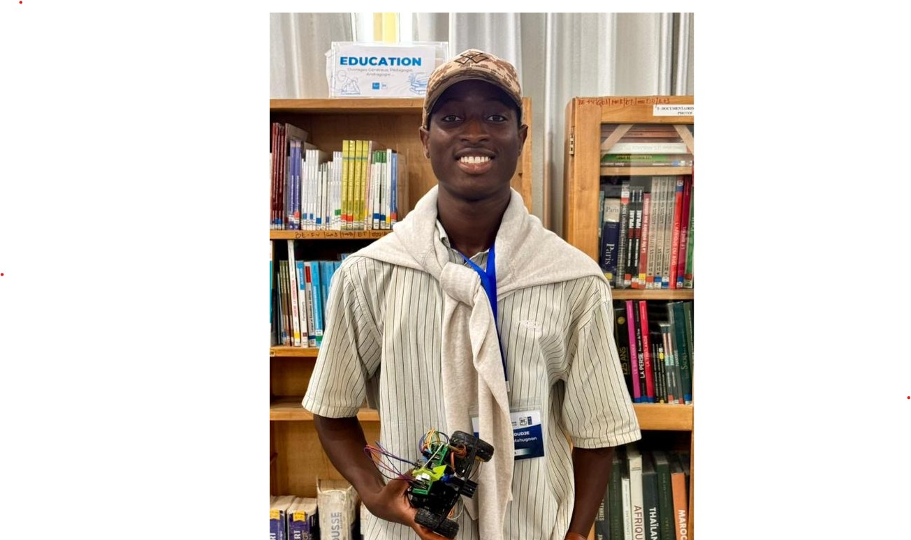
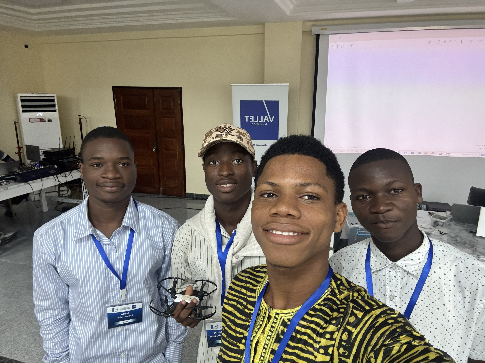
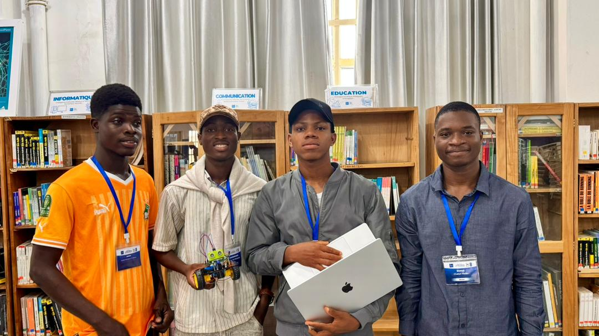
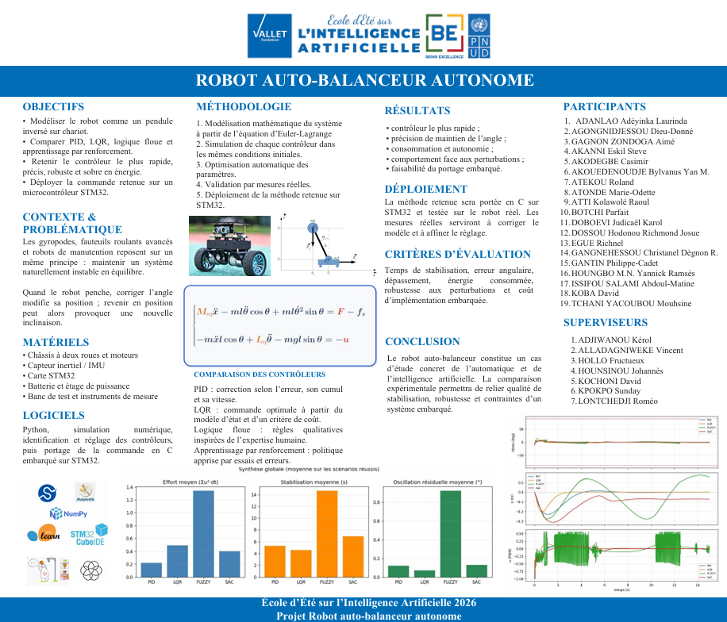
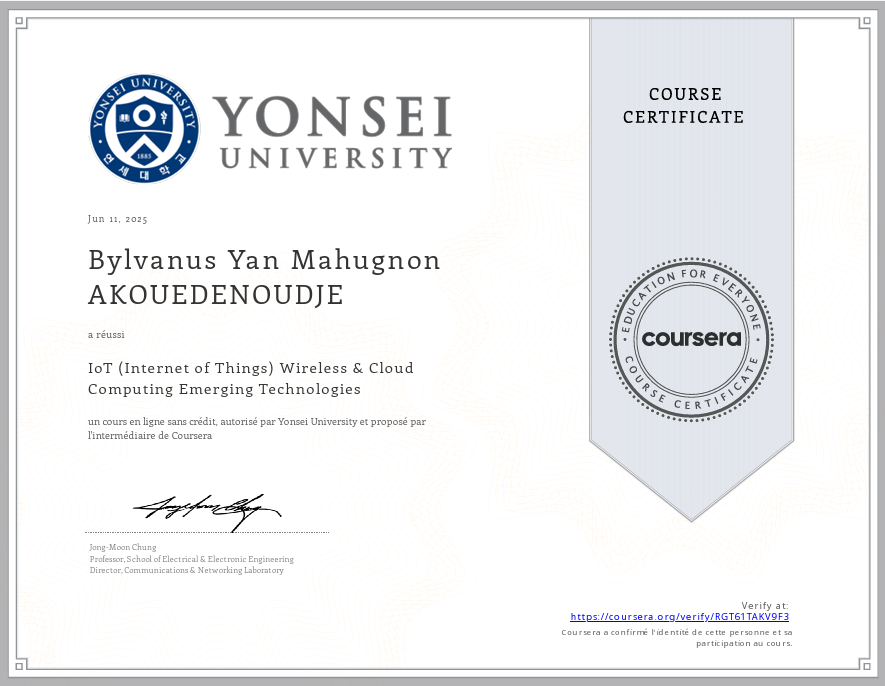

Je projette de devenir ingénieur R&D afin de contribuer par la recherche et l'innovation au développement de solutions robotiques intelligentes et innovantes à l'endroit des exploitations agricoles africaines.
Projets
Certifications
Attestations
Conférences & Forums

Je souhaite développer des systèmes robotiques intelligents combinant mécanique, électronique, automatique et intelligence artificielle pour résoudre des problèmes concrets, notamment dans le domaine agricole

Développement d'une interface de pilotage intelligente et multimodale pour le drone DJI Tello. Elle intègre la commande vocale en temps réel et le guidage gestuel par vision par ordinateur au signal de la main. Une interface manuelle au clavier complète l'ensemble pour offrir un contrôle de secours d'une précision maximale.

Conception et réalisation d'un robot mobile autonome capable de naviguer dans un environnement inconnu tout en évitant les obstacles. Il embarque un capteur ultrason pour mesurer la distance en temps réel et un servomoteur permettant de balayer l'espace pour choisir la meilleure trajectoire. Le système analyse les données pour stopper les moteurs, réorienter le robot et poursuivre sa navigation en toute sécurité.

Ce projet consiste à modéliser un robot auto-balanceur comme un pendule inversé sur chariot, puis à comparer plusieurs stratégies de contrôle PID, LQR, logique floue et apprentissage par renforcement afin d'identifier l'approche la plus rapide, précise, robuste et économe en énergie. La commande retenue a ensuite été déployée et testée en conditions réelles sur un microcontrôleur STM32, validant la faisabilité d'un système embarqué d'équilibrage autonome.

Ouvert aux opportunités, collaborations ou simplement échanger